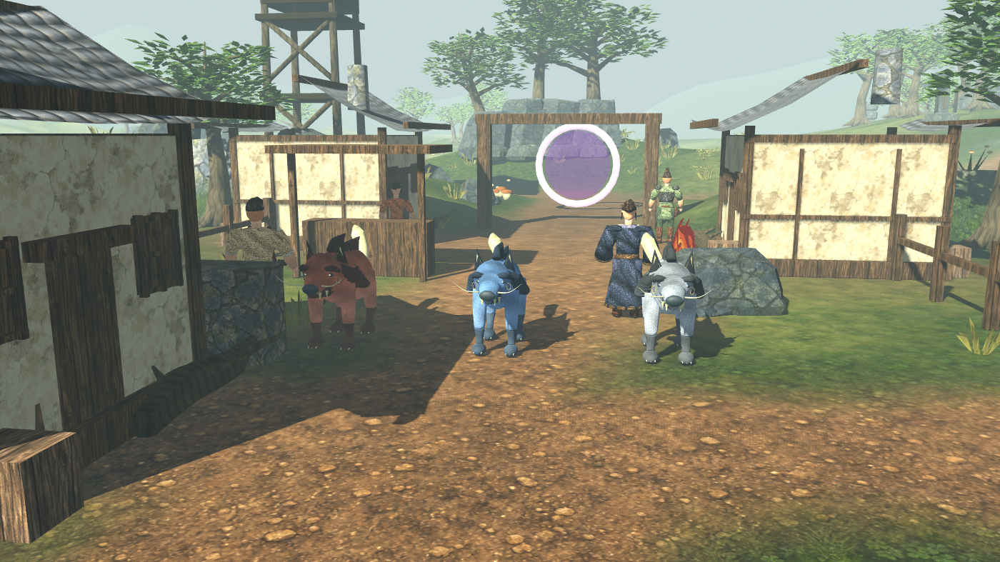
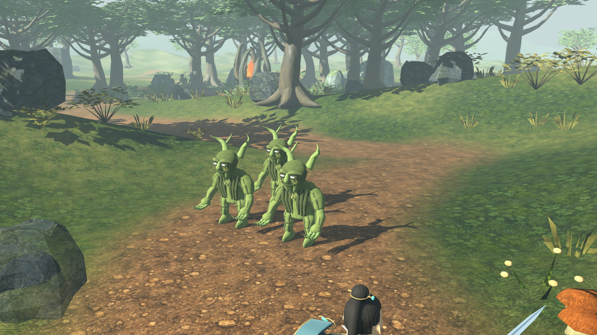
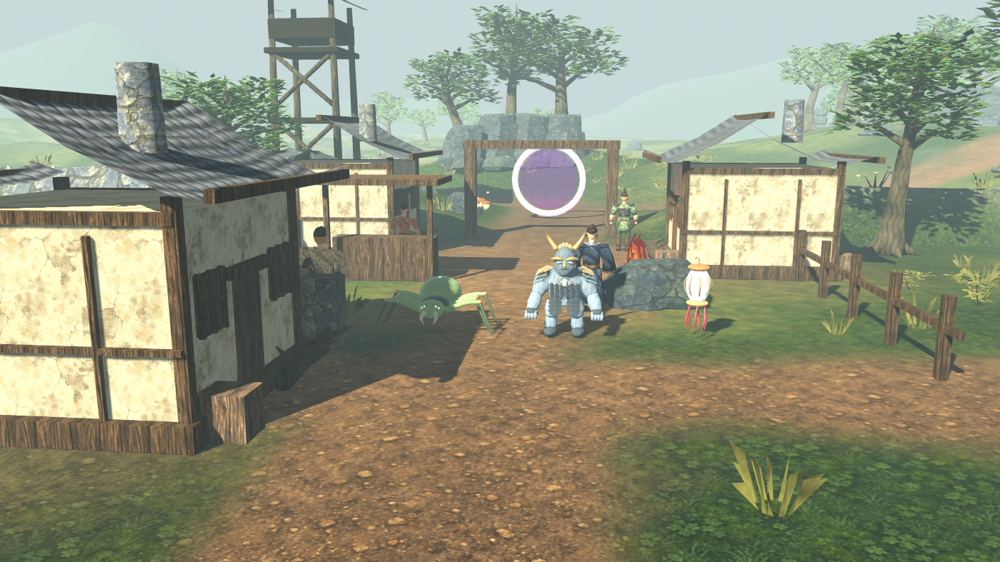
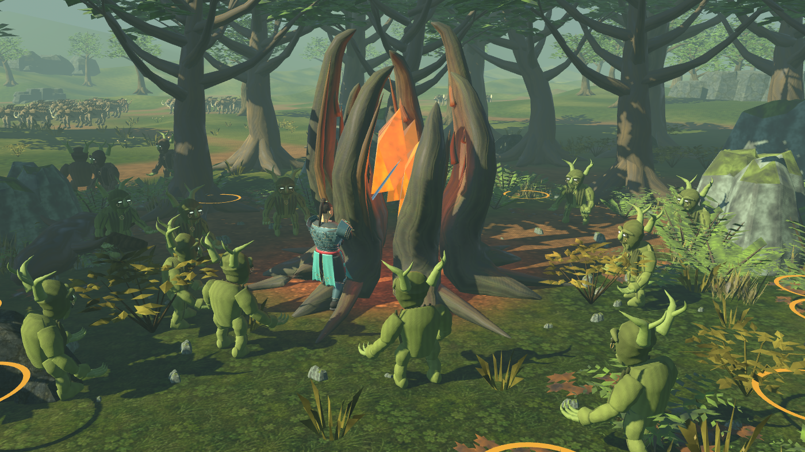
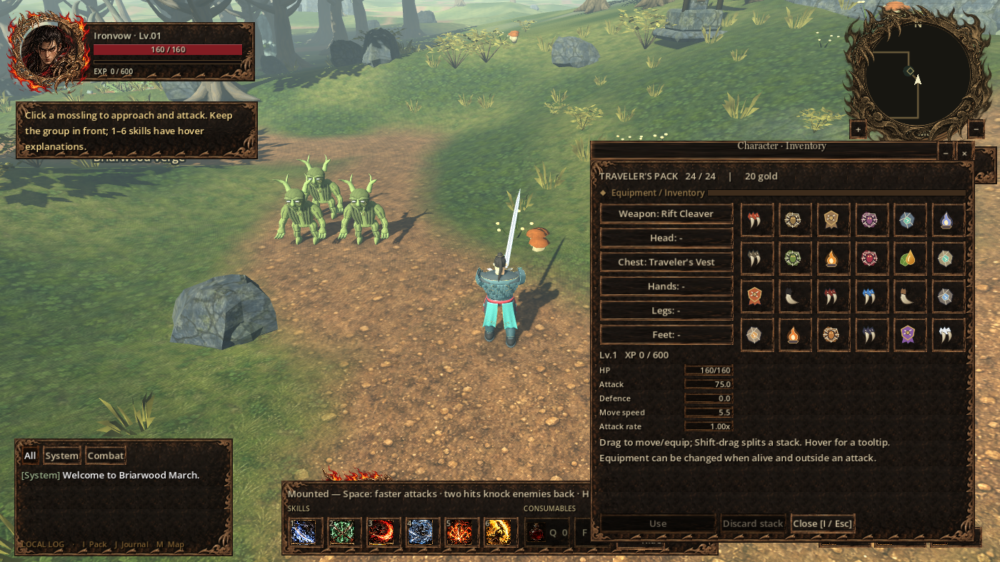

Ironfield · Field feedback review
Actual Godot scene captures: creature colors, Young Mosslings, mounted sword motion, root reinforcements and inventory trophies.
Mounted cuts
Alternating outside diagonal circles, with a raised transfer and body weight shift. Wayfarer Blade followed by Rift Cleaver.
Horse vocal
Real horse recording: Little neighing call #6 · Joseph SARDIN / BigSoundBank · CC0. Existing gallop sounds retained.
Creature presentation

Red, blue and grey wolves have distinct coats.
Young Mosslings: fresh green bark and rounder heads. Seven camps verified through streaming.
Fur, chitin, stone and luminous essence surfaces.
Reinforcements arrive during combat. Four waves release 24 defenders before collapse.Inventory trophies
35 distinct material icons, with fewer common drops. The established inventory layout is preserved.
Fangs, tusks, silk, cores, bark and plates.
Species colors, insignia, essence and sap.
Implementation and validation notes